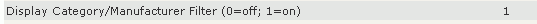
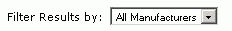
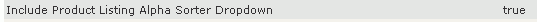
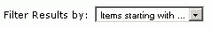
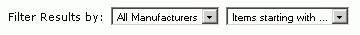
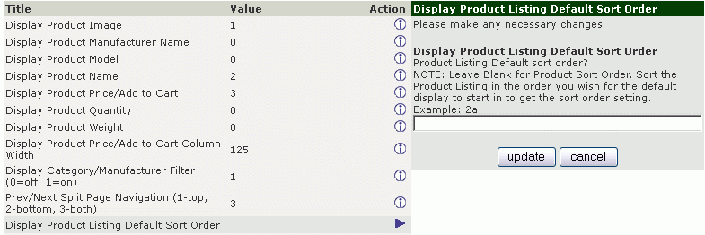

License: GPL 2.0 as per included license.txt
Version: 2.4 for Zen Cart v1.58.
Support Thread: http://www.zen-cart.com/showthread.php?205606-Product-Listing-Sorter-Drop-Down
This mod adds a new drop-down menu to the product listing page and the advanced
search results page that can be customised to offer any search options you
want.
Why? I don't use the column titles on my site (which would normally be used for sorting).
This mod is NOT a filter: all the products are displayed in the chosen order and it works in conjunction with the stock Manufacturer/Category filter drop-down and the Alpha "Sorter" (misnamed as it is actually a filter) drop-down.
The drop-down is enabled by an admin configuration setting:
Admin->Configuration->Product Listing->Include Product
Listing Sorter Dropdown (mod)
The drop-down adds another GET parameter to the urls that are used by the product-listing-name links and the return-to-listing button (in the prev-listing-next nav buttons) to preserve the listing sort order.
The product listing sql for the sorted/filtered product listing is passed to a new session variable for use by prev-next.
You should completely uninstall/unmerge changes made by the the previous versions, return all files to default AND then check your site functionality BEFORE installing this version. All done of course on your development server FIRST.
This fileset has been tested in a new Zen Cart 1.58 installation. You should test it similarly before integrating it into your own site.
As always, with ANY mod or plugin - DO NOT INSTALL NOR TEST ON A LIVE/PRODUCTION SITE without thoroughly testing it on a development server FIRST! You have been warned!
If any files (the overrides) already exist, you will need to merge the changes. If you are not sure what to do, install this on a vanilla Zen Cart and understand it before merging with your own shop development installation.
Where changes are applied to core files, I have included the core file too for easy comparison, named as whatever.158 php. I use this method on my site to highlight where a core file has been modified and easily compare the changes in situ.
Copy/merge the files into the correct directories: the files marked with the \YOUR_TEMPLATE path need to go into your template directories or responsive_classic if you are just testing on a new installation, NOT into directories literally called "YOUR_TEMPLATE".
When you refresh the Shopfront page, a new admin option will be installed in
Admin->Configuration->Product Listing->Include Product Listing Sorter Dropdown (mod)
to enable the module.
The options shown in the dropdown are based on the columns enabled in the Admin.
For columns/fields that are not set to be displayed or are not available in the Admin, you may add your custom option in
\includes\index_filters\YOUR_TEMPLATE\default_filter.php, you may define custom sorting options, eg.
$pls_custom_sort[] = ['id' => 9, 'text' => PLS_TEXT_CUSTOM_SORT_ORDER1, 'order' => ' ORDER BY p.products_sort_order'];
This is ascending, the code will automatically add the descending option.
Setting a default sort order that does not reference a displayed column.
The default sort order can be defined in the admin as detailed
below...but only in terms of the columns that are displayed.
If you want to use a different criteria, for example newest first, that
requires a code change.
Here is an example of using the products_date_added as criteria.
a) add the criteria to the sql in default_filter.php.
This sql appears in two places.
Change
// We show them all
$listing_sql = "select " . $select_column_list . " p.products_id,
p.products_type, p.master_categories_id, p.manufacturers_id,
p.products_price, p.products_tax_class_id, pd.products_description,.....
to (noting the "p.products_date_added, ")
// We show them all
$listing_sql = "select " . $select_column_list . " p.product_date_added,
p.products_id, p.products_type, p.master_categories_id,
p.manufacturers_id, p.products_price, p.products_tax_class_id,
pd.products_description,.....
b) Add the sorting clause that uses that criteria.
Change
// sort by products_sort_order when
PRODUCT_LISTING_DEFAULT_SORT_ORDER is left blank
// for reverse, descending order use:
// $listing_sql .= " order by p.products_sort_order desc,
pd.products_name";
$listing_sql .= " order by p.products_sort_order, pd.products_name";
break;
to
// sort by products_sort_order when
PRODUCT_LISTING_DEFAULT_SORT_ORDER is left blank
// for reverse, descending order use:
// $listing_sql .= " order by p.products_sort_order desc,
pd.products_name";
//$listing_sql .= " order by p.products_sort_order, pd.products_name";
$listing_sql .= " order by p.products_date_added DESC,
pd.products_name";//MOD
break;
Understanding the sorting and filtering mechanisms in Zen Cart is "difficult" to say the least. and so I have left debugging statements in the code. These can be enabled by setting the variable to 1 at the start of the file:
$debug = '0';//1 or 0, show debugging information
For further debugging I recommend installing the Superglobals plugin to show what variables are being set.
If you find the sorting by price is not correct, it is possible the
product_price_sorter field in the database is out of sync with the prices.
Run Admin->Tools->Store Manager->Update ALL Products Price
Sorter.
Copy the code from \sql\product_listing_sorter_uninstall.sql and paste it into Admin->Install SQL Patches and Send.
This will remove the option in:
Admin->Configuration->Product Listing->Include Product
Listing Sorter Dropdown (mod)
Delete the override files and unmerge the modifications to the core files.
From the community at http://www.zen-cart.com/showthread.php?205606-Product-Listing-Sorter-Drop-Down
-----------------------------------------------------------------------------------------------
I wrote this information to help my goldfish memory.
In the product listing there are two optional filters available.
1) The Category/Manufacturer filter

which displays this

2) The Product Listing Alpha filter (misnamed as an alpha sorter)

which displays this

Both can be enabled

This product listing sort order is handled by /includes/index_filters/default_filter.php using the value in $_GET['sort'].
$_GET['sort'] is not set on the initial page load so is given the default value set in the admin, or if nothing is defined, there is a hard-coded '20a' in the file.
Clicking on the product listing column headers will set a new value for $_GET['sort'] which will be used subsequently and thus override the default sort order.
In Admin->Configuration->Product Listing there are options which enable the display of the columns available.

What is not immediately apparent is that you can set the display order of those columns, eg. where Product Image is column 1, Product Name is column 2 and Product Price is column 3 as shown in the example.
The default sort order of the products
in those columns is determined by Display Product Listing Sort Order.
eg.
2a means sort by column 2 (Display Product name in this example),
descending: Z->A.
3d means sort by column 3 (Display Product Price/add to cart in this
example), ascending: low price->high price.
This value is named PRODUCT_LISTING_DEFAULT_SORT_ORDER in the database/code.
So, when $_GET['sort'] is not defined on initial page load (or is invalid/has anything other than "1-8" or "a" or "d" in it) then $_GET['sort'] will be set to the column of the Product Name and is hard-coded as ascending.
At this point the plugin code is added to allow processing of sort numbers above 8: the custom sort orders from 9 upwards.
So if you've set Product Name as column 7, $_GET['sort'] will be set to 7a.
If you have switched off "Display Product Name", a hard-coded default setting of 20a is used (line 117):
// if set to nothing use products_sort_order and
PRODUCTS_LIST_NAME is off
if (PRODUCT_LISTING_DEFAULT_SORT_ORDER == '') {
$_GET['sort'] = '20a';
If something is defined in there, it is examined by the following code:
$sort_col = substr($_GET['sort'], 0 , 1);
$sort_order = substr($_GET['sort'], 1);
switch ($column_list[$sort_col-1]) {
where the column to use for sorting is extracted/identified, followed by the a or d for the sort_order.
Update for ZC158.
Major overhaul of code.
Actually all these changes were done in 2016 but never got uploaded...sorry!
advanced_search_result.php: code edit to fix bug caused by using sorter
on a search result.
added parameters to category sidebox to carry the selected sort order
through to another category.
minor corrections and additional information to readme.
Minor updates for compatibility with Zen Cart 1.5.5.
Code completely rewritten to add to rather than replace existing filters
and make use of Zen Cart 1.60 drop-down listing code.
Functionality expanded to maintain the selected filter and sort order
through to the product info page/prev-next navigation and back to the
listing.
Readme updated.
Hard-coded constants removed: english and spanish defines added.
Refactored code to use overrides as much as possible.
Added code for Advanced Search Result
Added debugging.
Added new readme.
Repackaged as Product Listing Sorter instead of Product Filter Module...as
its not a filter!